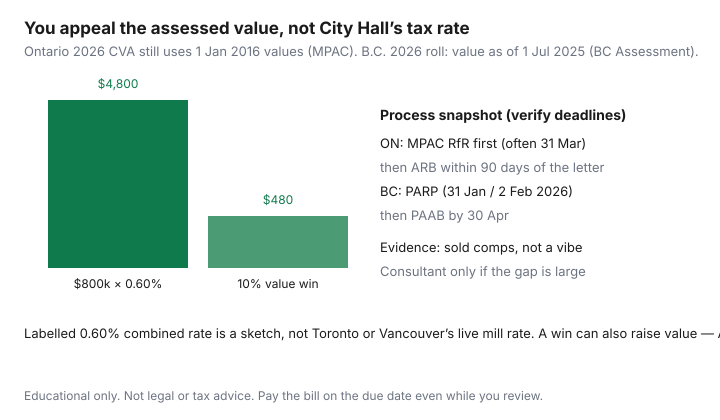

Housing · Canada
How to review and challenge a Canadian property assessment (without expecting miracles)
Homeowners ignore the assessment notice until the tax bill jumps, then search “how to lower property tax” as if a form repeals the mill rate. In Canada you usually challenge the assessed value (or classification), not the municipality’s budget. Tax is still due on the instalment date. A good review is a comps package and a calendar. A miracle is not on the menu.
Ontario’s 2026 assessed values are still January 1, 2016 current value unless the property changed (MPAC assessment-cycle page, used 20 Sep 2026). B.C.’s 2026 roll is a 1 July 2025 value (BC Assessment). Those are different clocks. This page is a Canada-framed map, not a filing kit for every province.
Disclosure: There is no natural affiliate product in an assessment-appeal explainer. Saving Optimizer does not claim assessor, tribunal, or consultant partnerships. This is educational process math, not legal or tax advice. Pay the bill on the due date.
Key takeaways
- Bill ≈ assessed value × tax rates. You appeal value; Council sets rates.
- Ontario 2026: still 1 Jan 2016 CVA (update postponed). Residential path: MPAC Request for Reconsideration, then ARB within 90 days of the results letter.
- B.C. 2026: value as of 1 Jul 2025. PARP deadline was 2 Feb 2026; PAAB typically 30 Apr.
- Evidence is sold comps, not “my neighbour’s taxes feel lower.”
- Labelled 10% win on $800,000 at 0.60% ≈ $480/year. Do not hire a consultant for a rounding error.
Read your assessment notice: value vs tax rate
The notice shows a current-value assessment (or the provincial equivalent) and a classification (residential, farm, multi-res). The municipality later multiplies that value by its rates, including education tax in Ontario. A higher notice does not always mean a higher bill if every house on the street moved together and the city lowers the rate. A flat 2016 Ontario CVA with a rising municipal rate is how bills climb without a new “market value.”
If you just bought, the sale price is a data point, not an automatic assessment. Ontario’s frozen 2016 valuation date means a 2025 purchase is not restated to 2025 market unless MPAC is valuing a change (new build, addition) as “this property, in its current state, as if sold on 1 Jan 2016.” That sentence is why people appeal the wrong year.

Comparable sales evidence that matters
Assessors use sales. So should you. In Ontario, MPAC’s AboutMyProperty lets you see how your file is built and which properties they consider similar. In B.C., Assessment Search shows sales. Pull:
- Same neighbourhood, similar lot and interior area, similar age and quality.
- Sale dates that match the valuation date (2016 in Ontario’s frozen cycle; 1 Jul 2025 in B.C. for the 2026 roll) — not last week’s bidding war, unless you are arguing a change-notice on current condition.
- Adjustments you can explain: finished basement, two-car vs one, river vs arterial.
Photos of a cracked walkway help a little. Three closer sales at a lower time-adjusted value help a lot. Classification errors (residential coded as multi-res) are sometimes the bigger dollar win than a 3% value argument.
Provincial/municipal appeal windows and forms overview
| Place | First step | Next step |
|---|---|---|
| Ontario (residential) | MPAC Request for Reconsideration — deadline printed on the notice (2026 tax-year conversation often 31 Mar 2026) | Assessment Review Board within 90 days of the RfR results letter. Fee on the ARB form. RfR is free. |
| British Columbia | Notice of Complaint to PARP — 31 Jan, extended to 2 Feb 2026 for that roll | Property Assessment Appeal Board by 30 Apr (fee). PARP first. |
| Alberta / others | Local assessment review board / provincial assessor process | Read the notice; windows are short and municipal. |
| Québec | Request for revision of the municipal roll | Further contest at the Tribunal administratif du Québec if needed — confirm the current municipal calendar. |
Ontario non-residential owners can sometimes go to the ARB without an RfR; residential, farm, and managed-forest owners generally cannot. MPAC said 2026 notices still go out when a property changes, and electronic notices expand in 2026 — register for AboutMyProperty so a PDF does not sit unread.
When hiring a consultant is (and is not) worth it
Do the comps first. Sketch: your CVA $800,000; you can defend $720,000; combined rate 0.60% in the labelled example. Annual gap ≈ $480. A $300–$600 consultant who wants a share of “savings” for that file is selling you your own spreadsheet. Hire help when the property is unusual (waterfront, mixed use, a new custom) or the dollar gap is thousands a year. Read the retainer. Some contingency shops are aggressive; Tribunals Ontario notes the ARB can find a higher value than the notice. That is the opposite of a miracle.
Payment plans and due-date traps
Appealing does not pause the tax bill. Missed instalments become penalties and, eventually, a tax-sale conversation. If the lender escrows tax, a jumped assessment still hits you through the escrow true-up. If you pay the city directly, use the instalment calendar — the same trap as first-year ownership cash. Hardship plans exist at some cities; they are not an appeal.
How assessment changes interact with moving or renovations
A sale can trigger a new notice (ownership, school support). A renovation, additional dwelling unit, or demolition triggers a value change even on Ontario’s frozen cycle, because MPAC values the current property at the fixed valuation date. Budget the assessment conversation the same year you pull a permit. When you move, the buyer’s lawyer should not assume your successful RfR travels as a folk tale — the roll follows the property. Special assessments on a condo are a corporation invoice, not MPAC; do not file the wrong fight (see condo documents).
Realistic savings expectations
Most reviews end with “no change.” Some end with a few percent. A 10% win on the labelled $800,000 / 0.60% file is $480 a year — real, and not a vacation. Classification fixes can be larger. If every owner on the street won the same cut, the city can still raise the rate next year. Do the review when the comps are honestly lower or the facts on the notice are wrong. Do not treat an assessment appeal as a substitute for shopping home insurance or the mortgage renewal — those are usually bigger levers.
Sources & date stamps
- MPAC, Assessment cycle and Notices pages — 2026 tax year still based on 1 Jan 2016 CVA; change notices still mail (used 20 Sep 2026).
- MPAC / CNW (17 Nov 2025) — 2026 RfR deadline conversation cited as 31 Mar 2026; confirm the date on your notice.
- Tribunals Ontario, Filing an appeal — residential RfR first; ARB 90 days from RfR decision mailing date.
- BC Assessment, Appeals / PARP guide — 2026 value as of 1 Jul 2025; PARP deadline 2 Feb 2026; PAAB 30 Apr.
- Ontario.ca, Property tax — municipal rates sit beside assessment (used 20 Sep 2026).
Frequently asked questions
Does a lower assessment automatically cut my tax bill?
Only if the assessed value used for that tax year falls and the municipality does not fully offset it with a higher rate. Tax = assessed value × (municipal + education) rates. You generally appeal the value or classification, not City Hall’s mill rate. A labelled $800,000 CVA at 0.60% is $4,800; a 10% value win is about $480, not a rewritten city budget.
What is Ontario’s 2026 assessment based on?
MPAC: property assessments for the 2026 tax year continue to use fully phased-in January 1, 2016 current values, unless your property changed (new structure, renovation, use). The province postponed the province-wide update. A 2026 notice can still arrive if something on the file changed. AboutMyProperty is the comparison tool. Residential owners generally file a Request for Reconsideration before an Assessment Review Board appeal.
What are B.C.’s 2026 assessment dates?
BC Assessment: a 2026 roll value is as of July 1, 2025. The Property Assessment Review Panel complaint deadline for 2026 was February 2, 2026 (January 31 fell on a weekend). The Property Assessment Appeal Board deadline is typically April 30. If you missed PARP, late-complaint discretion is a panel decision — ask BC Assessment; do not invent a right.
Should I hire an assessment consultant?
When the gap versus sold comps is large enough that a realistic value cut times your tax rate exceeds the fee with room to spare — and you will still do the evidence work. A $400 consultant on a $120 theory is not a save. ARB can also raise value.
Is this legal advice?
No. Educational process map. Use MPAC, Tribunals Ontario, BC Assessment, or your provincial assessor. Pay instalments on the due date even while you review.